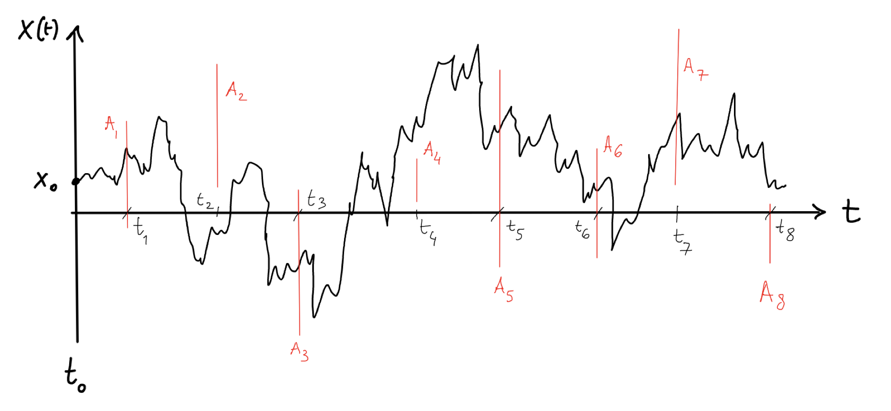
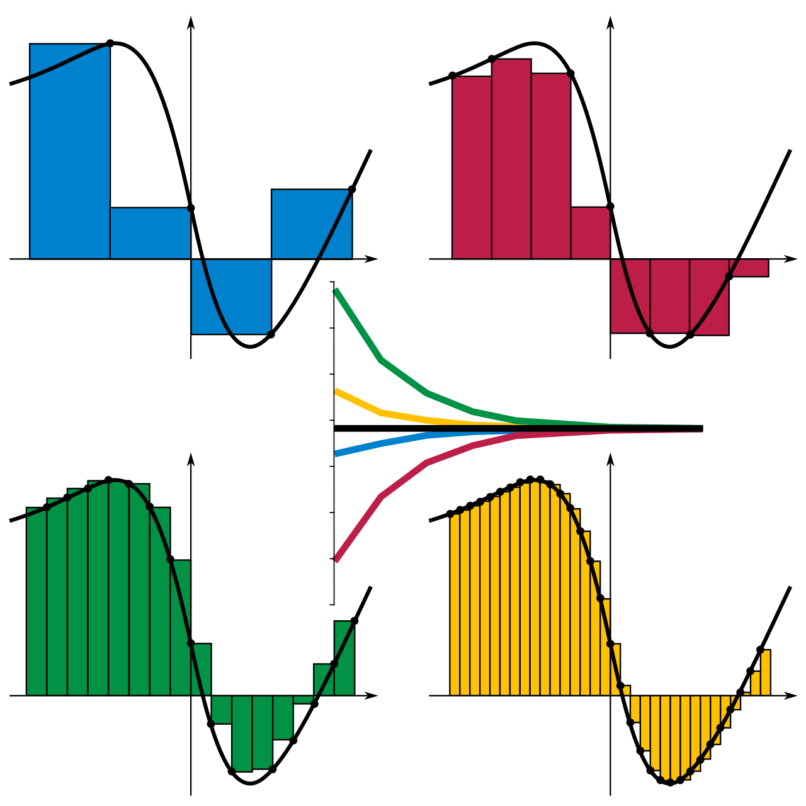

8 Path integrals
9 Path integrals
We now want to extend what was introduced in the previous chapter by calculating average quantities with respect to all possible random trajectories of a statistical Wiener process; to do this we will need to introduce a fundamental concept: that of the Wiener measure.
9.1 Wiener measure
The Chapman-Kolmogorov equation can be easily iterated by considering more intermediate points. For example, the propagator from \(\left(x_0,t_0\right)\) to \(\left(x_3,t_3\right)\) can be written as:
\[\begin{align*} p_{1|1}\left(x_3,t_3|x_0,t_0\right)&=\int_{\mathbb{R}}p_{1|1}\left(x_3,t_3|x_2,t_2\right)p_{1|1}\left(x_2,t_2|x_0,t_0\right)dx_2=\\ &=\int_{\mathbb{R}}p_{1|1}\left(x_3,t_3|x_2,t_2\right)\int_{\mathbb{R}}p_{1|1}\left(x_2,t_2|x_1,t_1\right)p_{1|1}\left(x_1,t_1|x_0,t_0\right)dx_1dx_2 \end{align*}\]
To extend to a generic number \(n\) of points, we formally introduce what is called the Wiener measure, expressed by the following differential:
\[\begin{equation} d\mathbb{P}_{t_1,\dots,t_n}\left(x_1,\dots,x_n|x_0,t_0\right)=\prod_{i=1}^nw\left(x_i,t_i|x_{i-1},t_{i-1}\right)dx_i \end{equation}\]
The integration of this quantity can be interpreted as the calculation of the joint probability of finding the particle in an area \(A_1\) at time \(t_1\), in an area \(A_2\supseteq A_1\) at time \(t_2\) and so on:
\[\begin{equation*} \mathbb{P}=\int_{A_1}\int_{A_2}\dots\int_{A_n} d\mathbb{P}_{t_1,\dots,t_n}\left(x_1,\dots,x_n|x_0,t_0\right)dx_1dx_2\dots dx_n \end{equation*}\]

Returning to the definition of the Wiener measure, putting together (eq:integrali-sui-cammini-misura-di-wiener-introduzione) and (eq:diffusione-soluzione-istante-di-tempo-iniziale-t0) we obtain the following expression:
\[\begin{equation} \boxed{d\mathbb{P}_{t_1,\dots,t_n}\left(x_1,\dots,x_n|x_0,t_0\right)=\frac{1}{(2\pi D)^{\frac{n}{2}}}e^{-\frac{1}{2D}\sum\limits_{i=1}^n\frac{\Delta x_i^2}{\Delta t_i}}\prod_{i=1}^n\frac{dx_i}{\sqrt{\Delta t_i}}} \end{equation}\]
being \(\Delta x_i=x_i-x_{i-1}\) and \(\Delta t_i=t_i-t_{i-1}\).
9.1.1 Two-point correlation function
We can apply what has been written for the calculation of the two-point correlation function \(\left\langle x\left(t_1\right)x\left(t_2\right)\right\rangle\); assuming that the random variable \(x(t)\) is relative to a Brownian process that starts at \(x\left(t_0\right)=x_0\), in fact, we will write:
\[\begin{align*} \left\langle x\left(t_1\right)x\left(t_2\right)\right\rangle&=\int_{\mathbb{R}}\int_{\mathbb{R}}x_1x_2d\mathbb{P}_{t_1,t_2}\left(x_1,x_2|x_0,t_0\right)=\\ &=\frac{1}{2\pi D}\int_{\mathbb{R}} \int_{\mathbb{R}}\frac{x_1x_2}{\sqrt{\left(t_1-t_0\right)\left(t_2-t_1\right)}}e^{-\frac{1}{2D}\left[\frac{\left(x_1-x_0\right)^2}{t_1-t_0}+\frac{\left(x_2-x_1\right)^2}{t_2-t_1}\right]}dx_1dx_2 \end{align*}\]
To find the solution, let’s change the variables in the following way:
\[\begin{equation*} \begin{cases} x=x_1-x_0\\ y=x_2-x_1 \end{cases} \Longrightarrow \ \begin{cases} x_1=x+x_0\\ x_2=y+x_1=y+x+x_0 \end{cases} \end{equation*}\] \end{equation*}
To make the substitution we must also insert the determinant of the Jacobian:
\[\begin{equation*} J= \begin{pmatrix} \frac{\partial x_1}{\partial x} & \frac{\partial x_1}{\partial y}\\ \frac{\partial x_2}{\partial x} & \frac{\partial x_2}{\partial y} \end{pmatrix} = \begin{pmatrix} 1 & 0\\ 1 & 1 \end{pmatrix} \ \Longrightarrow \ \det(J)=1 \end{equation*}\]
From which:
\[\begin{equation*} \left\langle x\left(t_1\right)x\left(t_2\right)\right\rangle=\frac{1}{2\pi D}\int_{\mathbb{R}} \int_{\mathbb{R}}\frac{\left(x+x_0\right)\left(x+y+x_0\right)}{\sqrt{\left(t_1-t_0\right)\left(t_2-t_1\right)}}e^{-\frac{1}{2D}\left[\frac{x^2}{t_1-t_0}+\frac{y^2}{t_2-t_1}\right]}dxdy \end{equation*}\]
Let’s focus on the numerator of the fraction of the integrand function:
\[\begin{equation*} \left(x+x_0\right)\left(x+y+x_0\right)=x^2+xy+x_0x+x_0x+x_0y+x_0^2 \end{equation*}\]
The exponential function is an even function, so any odd term will give a null contribution. The only non-odd terms are \(x_2\) and \(x_0^2\), whose contributions we can easily calculate:
We therefore find:
\[\begin{equation} \boxed{\left\langle x\left(t_1\right)x\left(t_2\right)\right\rangle=D\left(t_1-t_0\right)+x_0^2} \end{equation}\]
which is exactly what was obtained in equation (eq:diffusione-valor-medio-variabile-al-quadrato), having assumed here \(v=0\).
*Calculate the two-point correlation function for a Wiener process with a generic initial distribution* $g\left(x_0\right)$.
To include the uncertainty on the initial position, distributed according to $g\left(x_0\right)$, it is necessary to average the correlation function with respect to this quantity:
\begin{equation*}
\left\langle x\left(t_1\right)x\left(t_2\right)\right\rangle=\int_{\mathbb{R}}g\left(x_0\right)\int_{\mathbb{R}}\int_{\mathbb{R}}x_1x_2d\mathbb{P}_{t_1,t_2}\left(x_1,x_2|x_0,t_0\right)dx_0
\end{equation*}
The calculations will therefore proceed in the same way as they were carried out in the paragraph. The only difference is given by the contribution due to the term $x_0^2$, which instead of giving $x_0^2$ will give $\left\langle x_0^2\right\rangle_g$. It will therefore result:
\begin{equation*}
\left\langle x\left(t_1\right)x\left(t_2\right)\right\rangle=D\left(t_1-t_0\right)+\left\langle x_0^2\right\rangle_g
\end{equation*}9.2 Wiener path integral
It is interesting to note how the formula for the differential obtained in (eq:integrali-sui-cammini-misura-di-wiener-differenziale) can be expressed in the limit for \(n\to\infty\), keeping in mind a couple of precautions.
First of all, it is necessary to set a maximum time \(T\) within which the process is considered to be evolving. Increasing the number of intervals \(\Delta t_i\), therefore, means decreasing the width of each of them, being
\[\begin{equation*} \sum_{i=1}^n\Delta t_i=T \end{equation*}\]
Passing from a discrete to a continuous domain, we expect each single interval to converge to zero. We can formally guarantee this by assuming that the largest interval goes to zero in the limit, since, if this is the behavior of the largest interval, this will also apply to all the other intervals:
\[\begin{equation*} \lim_{n\to\infty}\max\left(\Delta t_i\right)=0 \end{equation*}\]

Having made these premises, we can actually study the behavior at the limit. Let’s first understand how the exponent transforms:
\[\begin{equation*} \sum_{i=1}^n\frac{\Delta x_i^2}{\Delta t_i}=\sum_{i=1}^n\left(\frac{\Delta x_i}{\Delta t_i}\right)^2\Delta t_i \end{equation*}\]
What is written is none other than the Riemann sum for the derivative of \(x(t)\), that is, a type of numerical integration as shown in figure (fig:somma-di-riemann). It follows that, in the limit for \(n\to\infty\), it results:
\[\begin{equation*} \sum_{i=1}^n\left(\frac{\Delta x_i}{\Delta t_i}\right)^2\Delta t_i\to\int_0^T\left(\frac{dx}{dt}\right)^2dt \end{equation*}\]
Considering a normalization constant \(N\), equation (eq:integrali-sui-cammini-misura-di-wiener-differenziale) becomes:
\[\begin{equation} \boxed{d\mathbb{P}_W=Ne^{-\frac{1}{2D}\int_0^T\left(\frac{dx}{dt}\right)^2dt}\prod_{\tau=0^+}^Tdx(\tau)} \end{equation}\]
The integration of any functional using this differential is called the Wiener path integral, as each possible trajectory - or , precisely - contributes with a certain weight to the overall calculation, since not all trajectories have the same probability of being realized.
It should be borne in mind that the formula written above is only formal and has no real meaning in itself: we note in fact that the function \(x(t)\) is by definition not differentiable at any point, since each point of the trajectory is randomly extracted from a distribution in the vicinity of the previous point, and therefore a trajectory is not followed. In practice - as we will see in the following example - the calculation is performed in discrete form starting from the differential associated with the Wiener measure, and only at the end is the limit for \(n\to\infty\) evaluated.
9.2.1 Mean of a functional of the trajectory
Our goal is to calculate the expected value of the following functional:
\[\begin{equation*} F\left(\int_0^Tx(t)a(t)dt\right) \end{equation*}\]
where \(x(t)\) is the sample trajectory of a Brownian motion, while \(a(t)\) and \(F\) are two smooth functions, that is, belonging to \(C^{\infty}\).
As anticipated, we will work with the discrete form of the expression, going to the limit only at the end of the calculation. The object of the function \(F\), therefore, will pass to
\[\begin{equation*} \int_0^Tx(t)a(t)dt \ \longrightarrow \ \sum_{i=1}^nx_ia_i\Delta t_i \end{equation*}\]
In the calculation that we will face, we will have to reduce to a Gaussian integral, and to do this we will need to make the interval \(\Delta x_i\) explicit. Let’s therefore rewrite the integral in \(dt\) by parts, choosing \(a(t)\) as the function to integrate
\[\begin{equation*} \int_0^Tx(t)a(t)dt=x(t)\int_T^ta(t')dt'\bigg|_{t=0}^{t=T}-\int_0^T\frac{dx}{dt}\left(\int_T^ta(t')dt'\right)dt \end{equation*}\]
having written the integral of \(a(t)\) in the form \(\int_\alpha^ta(t')dt'\) with \(\alpha=T\).
The first term on the right-hand side is zero, since:
\[\begin{equation*} x(t)\int_T^ta(t')dt'\bigg|_{t=0}^{t=T}=x(T)\cancel{\int_T^Ta(t')dt'}-\cancel{x(0)}\int_T^0a(t')dt'=0 \end{equation*}\]
By inverting the limits of the inner integral of the second term, therefore, it results:
\[\begin{equation*} \int_0^Tx(t)a(t)dt=\int_0^T\frac{dx}{dt}\left(\int_t^Ta(t')dt'\right)dt \end{equation*}\]
Let’s set:
\[\begin{equation*} A(t)=\int_t^Ta(t')dt' \ \Longrightarrow \ \int_0^Tx(t)a(t)dt=\int_0^TA(t)\frac{dx}{dt}dt \end{equation*}\]
We thus obtain the differential \(dx\):
\[\begin{equation} \int_0^Tx(t)a(t)dt=\int_0^TA(t)dx \end{equation}\]
We can now move on to the discretization we need:
\[\begin{equation*} \int_0^TA(t)dx \ \longrightarrow \ \sum_{i=1}^nA_i\Delta x_i \end{equation*}\]
We can now proceed with the calculations; indicating the mean of the discretized functional as \(\left\langle F_n\right\rangle\), we will use the Wiener measure to write:
\[\begin{equation} \left\langle F_n\right\rangle=\frac{1}{\left(2\pi D\right)^{\frac{n}{2}}}\int_{\mathbb{R}^n}e^{-\frac{1}{2D}\sum\limits_{i=1}^n\frac{\Delta x_i^2}{\Delta t_i}}\prod_{i=1}^n\frac{1}{\sqrt{\Delta t_i}}F\left(\sum_{j=1}^nA_j\Delta x_j\right)dx_i \end{equation}\]
Let’s perform the following change of variables:
\[\begin{equation*} y_i=\Delta x_i=x_i-x_{i-1} \end{equation*}\]
From which it follows:
\[\begin{equation*} \begin{cases} y_1=x_1-x_0\\ y_2=x_2-x_1\\ y_3=x_3-x_2\\ \vdots \end{cases} \Longrightarrow \ \begin{cases} x_1=x_0+y_1\\ x_2=x_1+y_2=x_0+y_1+y_2\\ x_3=x_2+y_3=x_0+y_1+y_2+y_3\\ \vdots \end{cases} \end{equation*}\] \end{equation*}
We can easily calculate the Jacobian:
\[\begin{equation*} J= \begin{pmatrix} \frac{\partial x_1}{\partial y_1} & \frac{\partial x_1}{\partial y_2} & \dots & \frac{\partial x_1}{\partial y_n}\\ \frac{\partial x_2}{\partial y_1} & \frac{\partial x_2}{\partial y_2} & \dots & \frac{\partial x_2}{\partial y_n}\\ \vdots & \vdots & \ddots & \vdots\\ \frac{\partial x_n}{\partial y_1} & \frac{\partial x_n}{\partial y_2} & \dots & \frac{\partial x_n}{\partial y_n} \end{pmatrix} = \begin{pmatrix} 1 & 0 & \dots & 0\\ 1 & 1 & \dots & 0\\ \vdots & \vdots & \ddots & \vdots\\ 1 & 1 & \dots & 1 \end{pmatrix} \end{equation*}\]
This is a lower triangular matrix that has as its determinant the product of the elements on the main diagonal, equal to \(1\). Since \(\det(J)=1\), the integral will result
\[\begin{equation} \left\langle F_n\right\rangle=\frac{1}{(2\pi D)^{\frac{n}{2}}}\int_{\mathbb{R}^n}e^{-\frac{1}{2D}\sum\limits_{i=1}^n\frac{y_i^2}{\Delta t_i}}\prod_{i=1}^n\frac{1}{\sqrt{\Delta t_i}}F\left(\sum_{j=1}^nA_jy_j\right)dy_i \end{equation}\]
Since the variables \(y_i\) are inside the functional, which can have a generic form, the integral is not so directly solvable. Through a trick, however, we can write the dependence on \(y_i\) in exponential form; first of all, we can write the exponential through the Dirac delta in the following way:
\[\begin{equation*} F\left(\sum_{j=1}^nA_jy_j\right)=\int_{\mathbb{R}}F(z)\delta\left(z-\sum_{j=1}^nA_jy_j\right)dz \end{equation*}\]
Let’s recall the explicit form of the Dirac delta:
\[\begin{equation*} \delta(z)=\frac{1}{2\pi}\int_{\mathbb{R}}e^{ixz}dx \ \Longrightarrow \ F\left(\sum_{j=1}^nA_jy_j\right)=\frac{1}{2\pi}\int_{\mathbb{R}}F(z)\int_{\mathbb{R}}e^{ix\left(z-\sum\limits_{j=1}^nA_jy_j\right)}dxdz \end{equation*}\]
Substituting in (eq:integrali-sui-cammini-media-funzionale-calcolo-1):
\[\begin{equation*} \left\langle F_n\right\rangle=\frac{1}{2\pi(2\pi D)^{\frac{n}{2}}}\int_{\mathbb{R}^n}e^{-\frac{1}{2D}\sum\limits_{i=1}^n\frac{y_i^2}{\Delta t_i}}\prod_{i=1}^n\frac{1}{\sqrt{\Delta t_i}}\int_{\mathbb{R}}F(z)\int_{\mathbb{R}}e^{ix\left(z-\sum\limits_{j=1}^nA_jy_j\right)}dxdzdy_i \end{equation*}\]
Since the domains of the integrals are compatible with each other, we can exchange their order and move the terms inside as we please:
\[\begin{equation*} \left\langle F_n\right\rangle=\frac{1}{2\pi(2\pi D)^{\frac{n}{2}}}\int_{\mathbb{R}}F(z)\int_{\mathbb{R}}e^{ixz}\prod_{i=1}^n\frac{1}{\sqrt{\Delta t_i}}\red{\int_{\mathbb{R}^n}e^{-\frac{1}{2D}\sum\limits_{j=1}^n\left(\frac{y_j^2}{\Delta t_j}+2iDxA_jy_j\right)}dy_j}dxdz \end{equation*}\]
Let’s solve the innermost integral highlighted in red:
\[\begin{align*} \int_{\mathbb{R}^n}e^{-\frac{1}{2D}\sum\limits_{j=1}^n\left(\frac{y_j^2}{\Delta t_j}+2iDxA_jy_j\right)}dy_j&=\int_{\mathbb{R}^n}\prod_{j=1}^ne^{-\frac{1}{2D}\left(\frac{y_j^2}{\Delta t_j}+2iDxA_jy_j\right)}dy_j=\\ &=\prod_{j=1}^n\int_{\mathbb{R}^n}e^{-\frac{y_j^2}{2D\Delta t_j}-ixA_jy_j}dy_j=\\ &=\prod_{j=1}^n\sqrt{2\pi D\Delta t_j}e^{-\frac{1}{2}Dx^2A_j^2\Delta t_j}=\\ &=(2\pi D)^{\frac{n}{2}}e^{-\frac{1}{2}Dx^2\sum\limits_{i=1}^nA_i^2\Delta t_i}\prod_{j=1}^n\sqrt{\Delta t_j} \end{align*}\]
Substituting in the starting expression, the factor \(\frac{1}{(2\pi D)^{\frac{n}{2}}}\) will be simplified, as well as \(\prod\limits_{i=1}^n\frac{1}{\sqrt{\Delta t_i}}\). What remains is:
\[\begin{align*} \left\langle F_n\right\rangle&=\frac{1}{2\pi}\int_{\mathbb{R}}F(z)\int_{\mathbb{R}}e^{ixz}e^{-\frac{1}{2}Dx^2\sum\limits_{i=1}^nA_i^2\Delta t_i}dxdz=\\ &=\frac{1}{2\pi}\int_{\mathbb{R}}F(z)\int_{\mathbb{R}}e^{-\frac{1}{2}D\left(\sum\limits_{i=1}^nA_i^2\Delta t_i\right)x^2+izx}dxdz \end{align*}\]
The innermost integral in \(x\) is another Gaussian integral that we know how to solve. Setting \(\gamma_n=\sum\limits_{i=1}^nA_i^2\Delta t_i\) it results:
\[\begin{equation*} \left\langle F_n\right\rangle=\frac{1}{2\pi}\int_{\mathbb{R}}F(z)\sqrt{\frac{2\pi}{D\gamma_n}}e^{-\frac{z^2}{2D\gamma_n}}dz=\int_{\mathbb{R}}F(z)\frac{1}{\sqrt{2\pi D\gamma_n}}e^{-\frac{z^2}{2D\gamma_n}}dz \end{equation*}\]
Inside the integral we find a Gaussian distribution in the variable \(z\) centered at zero and with variance \(D\gamma_n\), which we can indicate with \(\mathcal{N}_z\left(0,D\gamma_n\right)\):
\[\begin{equation} \left\langle F_z\right\rangle=\int_{\mathbb{R}}F(z)\mathcal{N}_z\left(0,D\gamma_n\right)dz \end{equation}\]
This is the moment to calculate the limit, passing from the discrete to the continuous domain. The only explicitly discrete element is \(\gamma_n\) due to its definition, so we will only have to calculate its value at the limit:
\[\begin{equation*} \gamma_n=\sum_{i=1}^nA_i^2\Delta t_i \ \xrightarrow{n\to\infty} \ \int_0^TA(t)^2dt=\int_0^T\left(\int_t^Ta(t')dt'\right)^2dt \end{equation*}\]
The final result is therefore the following:
\[\begin{equation} \boxed{\left\langle F\left(\int_0^Tx(t)a(t)dt\right)\right\rangle_{BM}=\int_{\mathbb{R}}F(z)\mathcal{N}_z(0,DR(T))dz} \end{equation}\]
having set
\[\begin{equation} R(T)=\int_0^T\left(\int_t^Ta(t')dt'\right)^2dt \end{equation}\]
With \(F(z)=e^{hz}\) we obtain the moment generating function \(\phi(h)\):
\[\begin{equation} \varphi(h)\equiv\left\langle e^{h\int_0^Tx(t)a(t)dt}\right\rangle_{BM}=\int_{\mathbb{R}}e^{hz}\mathcal{N}_z(0,DR(T))dz \end{equation}\]
By deriving \(n\) times with respect to \(h\), in fact, we have
\[\begin{equation*} \frac{d^n\varphi}{dh^n}=\int_{\mathbb{R}}z^ne^{hz}\mathcal{N}_z(0,DR(T))dz \end{equation*}\]
By calculating the derivative at \(h=0\) we find precisely the \(n\)-th order moment:
\[\begin{equation} \frac{d^n\varphi}{dh^n}\bigg|_{h=0}=\int_{\mathbb{R}}z^n\mathcal{N}_z(0,DR(t))dz=\left\langle z^n\right\rangle \end{equation}\]
Let’s therefore perform the calculation directly starting from (eq:integrali-sui-cammini-funzione-di-generazione-dei-momenti):
\[\begin{equation*} \varphi(h)=\frac{1}{\sqrt{2\pi DR(T)}}\int_{\mathbb{R}}e^{-\frac{z^2}{2DR(T)}+hz}=\frac{1}{\cancel{\sqrt{2\pi DR(T)}}}\cdot\cancel{\sqrt{2\pi DR(T)}}e^{\frac{h^2DR(T)}{2}} \end{equation*}\]
From which:
\[\begin{equation} \boxed{\varphi(h)=e^{\frac{1}{2}DR(T)h^2}} \end{equation}\]
Choosing \(F(z)=e^z\) and \(a(t)=h_1\delta\left(t_1-t\right)+h_2\delta\left(t_2-t\right)\), calculate the following quantities:
Solution.
\begin{enumerate}
\item By definition:
\begin{equation*}
A(t)=\int_t^Ta(t')dt'=h_1\int_t^T\delta\left(t_1-t'\right)dt'+h_2\int_t^T\delta\left(t_2-t'\right)dt'
\end{equation*}
Assuming that $t_1<t_2$, we distinguish three cases:
\begin{itemize}
\item When $t\leqslant t_1$, both $t_1$ and $t_2$ belong to the interval $[t,T]$, so both integrals are non-zero.
\item When $t_1<t\leqslant t_2$, only $t_2$ belongs to the interval $[t,T]$, so the delta with $t_1$ will be zero.
\item When $t>t_2$, neither $t_1$ nor $t_2$ belong to the interval $[t,T]$, so both integrals are zero.
\end{itemize}
To summarize:
\begin{equation*}
A(t)=
\begin{cases}
h_1+h_2 \ &t\in[0,t_1]\\
h_2 \ &t\in(t_1,t_2]\\
0 \ &t\in(t_2,T]
\end{cases}
\end{equation*}
\item Again, by definition:
\begin{align*}
R(T)&=\int_0^TA(t)^2dt=\int_0^{t_1}\left(h_1+h_2\right)^2dt+\int_{t_1}^{t_2}h_2^2dt+\int_{t_2}^T0dt=\\
&=\left(h_1+h_2\right)^2t_1+h_2^2\left(t_2-t_1\right)=\\
&=h_1^2t_1+2h_1h_2t_1\cancel{+h_2^2t_1}+h_2^2t_2\cancel{-h_2^2t_1}=\\
&=t_1h_1^2+2t_1h_1h_2+t_2h_2^2
\end{align*}
\item Since $F(z)=e^z$, we can take up the formula (eq:integrali-sui-cammini-funzione-di-generazione-dei-momenti-finale) with $h=1$:
\begin{equation*}
\varphi\left(h_1,h_2\right)=e^{\frac{1}{2}DR(T)}=e^{\frac{1}{2}D\left(t_1h_1^2+2t_1h_1h_2+t_2h_2^2\right)}
\end{equation*}
Let's proceed with the derivatives:
\begin{equation*}
\frac{\partial\varphi}{\partial h_2}=\frac{1}{2}D\left(2t_1h_1+2t_2h_2\right)\varphi\left(h_1,h_2\right)=D\left(t_1h_1+t_2h_2\right)\varphi\left(h_1,h_2\right)
\end{equation*}
\small
\begin{equation*}
\frac{\partial^2\varphi}{\partial h_1\partial h_2}=Dt_1\varphi\left(h_1,h_2\right)+D\left(t_1h_1+t_2h_2\right)\cdot\frac{1}{2}D\left(2t_1h_1+2t_1h_2\right)\varphi\left(h_1,h_2\right)
\end{equation*}
\normalsize
Setting $h_1=h_2=0$, the second term vanishes, so what remains is:
\begin{equation*}
\frac{\partial^2\varphi}{\partial h_1\partial h_2}\bigg|_{h_1=h_2=0}=Dt_1\varphi\left(h_1,h_2\right)\big|_{h_1=h_2=0}=Dt_1
\end{equation*}
Let's remember that the calculations were done assuming that $t_1<t_2$. In the opposite case, it is easy to verify that the function $A(t)$ is the same with the subscripts inverted, and the same property is inherited by $R(T)$ and therefore by $\frac{\partial^2\varphi}{\partial h_1\partial h_2}$, which at $h_1=h_2=0$ will therefore be equal to $Dt_2$. It follows that, in general:
\begin{equation*}
\frac{\partial^2\varphi}{\partial h_1\partial h_2}\bigg|_{h_1=h_2=0}=D\min\left(t_1,t_2\right)
\end{equation*}
We obtain the same result seen in (eq:processi-stocastici-wiener-funzione-correlazione) for the two-point correlation function of a Brownian motion (in the general case with $D\neq1$). This is not a coincidence, in fact:
\begin{align*}
\int_0^Tx(t)a(t)dt&=h_1\int_0^Tx(t)\delta\left(t_1-t\right)dt+h_2\int_0^Tx(t)\delta\left(t_2-t\right)dt=\\
&=h_1x\left(t_1\right)+h_2x\left(t_2\right)
\end{align*}
from which it follows that
\begin{align*}
\frac{\partial^2\varphi}{\partial h_1\partial h_2}\bigg|_{h_1=h_2=0}&=\frac{\partial^2}{\partial h_1\partial h_2}\left\langle e^{h_1x\left(t_1\right)+h_2x\left(t_2\right)}\right\rangle_{BM}\big|_{h_1=h_2=0}=\\
&=\left\langle\frac{\partial^2}{\partial h_1\partial h_2}e^{h_1x\left(t_1\right)+h_2x\left(t_2\right)}\right\rangle_{BM}\bigg|_{h_1=h_2=0}=\\
&=\left\langle \left[x\left(t_1\right)x\left(t_2\right)\right]e^{h_1x\left(t_1\right)+h_2x\left(t_2\right)}\right\rangle_{BM}\big|_{h_1=h_2=0}=\\
&=\left\langle x\left(t_1\right)x\left(t_2\right)\right\rangle
\end{align*}
\end{enumerate}9.3 Analogy with quantum mechanics
Path integrals were first introduced by the physicist Richard Feynman in the context of quantum mechanics in Lagrangian formulation. In fact, quantum phenomena can be considered stochastic processes, as they are intrinsically probabilistic in their evolution before the collapse of the wave function.
The same Chapman-Kolmogorov law is easily obtained from the use of Dirac’s bra-ket notation:
\[\begin{equation*} \bra{x_2,t_2}\ket{x_0,t_0}=\bra{x_2,t_2}\mathds{1}\ket{x_0,t_0}=\int\bra{x_2,t_2}\ket{x_1,t_1}\bra{x_1,t_1}\ket{x_0,t_0}dx_1 \end{equation*}\]
Returning to path integration, according to Feynman’s notation which makes use of the measure \(\mathcal{D}x\), we will write the propagator from \(\left(0,0\right)\) to \(\left(x,T\right)\) as
\[\begin{equation} w\left(x,T|0,0\right)=\int_0^x\mathcal{D}x(\tau)e^{-\frac{1}{2D}\int_0^T\left(\frac{dx}{dt}\right)^2dt} \end{equation}\]
In the Lagrangian formulation, this quantity is reported as
\[\begin{equation*} \int_0^x\mathcal{D}x(\tau)e^{-S[x(s)]} \end{equation*}\]
where \(S\) is the action of the system, which by definition is equal to the integral of the Lagrangian over time. From this similarity we understand that the Lagrangian \(\mathcal{L}\) of our diffusion system is
\[\begin{equation*} \mathcal{L}(x)=\frac{1}{2D}\left(\frac{dx}{dt}\right)^2 \end{equation*}\]
For a complete similarity between the two worlds, we can try to reduce to the expression of the Lagrangian of a free particle. In the first place, we know that we need a mass in the numerator, so certainly \(D\propto\frac{1}{m}\), and for dimensional reasons the proportionality constant must be equal to \(\hbar^2\):
\[\begin{equation*} D=\frac{\hbar^2}{m} \ \Longrightarrow \ \mathcal{L}(x)=\frac{m}{2\hbar^2}\left(\frac{dx}{dt}\right)^2 \end{equation*}\]
Substituting in (eq:integrali-sui-cammini-mq-propagatore):
\[\begin{equation*} w\left(x,T|0,0\right)=\int_0^x\mathcal{D}x(\tau)e^{-\frac{m}{2\hbar^2}\int_0^T\left(\frac{dx}{dt}\right)^2dt} \end{equation*}\]
For this to make sense in quantum mechanics, it is necessary to introduce the factor \(\frac{i}{\hbar}\) in the exponent, so we introduce this quantity by passing from \(t\) to \(-i\hbar t\), obtaining:
\[\begin{equation*} w\left(x,T|0,0\right)=\int_0^x\mathcal{D}x(\tau)e^{\frac{im}{2\hbar}\int_0^{\tilde{T}}\left(\frac{dx}{dt}\right)^2dt} \end{equation*}\]
being \(\tilde{T}=-i\hbar T\) according to the substitution made.
Since we know the form of the propagator in Brownian motion, by substituting the values of \(D\) and \(t\) we will obtain:
\[\begin{equation*} w(x,T|0,0)=\frac{1}{\sqrt{2\pi DT}}e^{-\frac{x^2}{2DT}} \ \longrightarrow \ \sqrt{\frac{m(-i\hbar)}{2\pi\hbar^2\tilde{T}}}e^{-\frac{m(-i\hbar)}{2\hbar^2\tilde{T}}x^2}=\sqrt{\frac{m}{2\pi i\hbar\tilde{T}}}e^{\frac{im}{2\hbar\tilde{T}}x^2} \end{equation*}\]
which corresponds to the Green’s function, which expresses the propagator of the Schrödinger equation relative to the problem of the free particle in quantum mechanics.